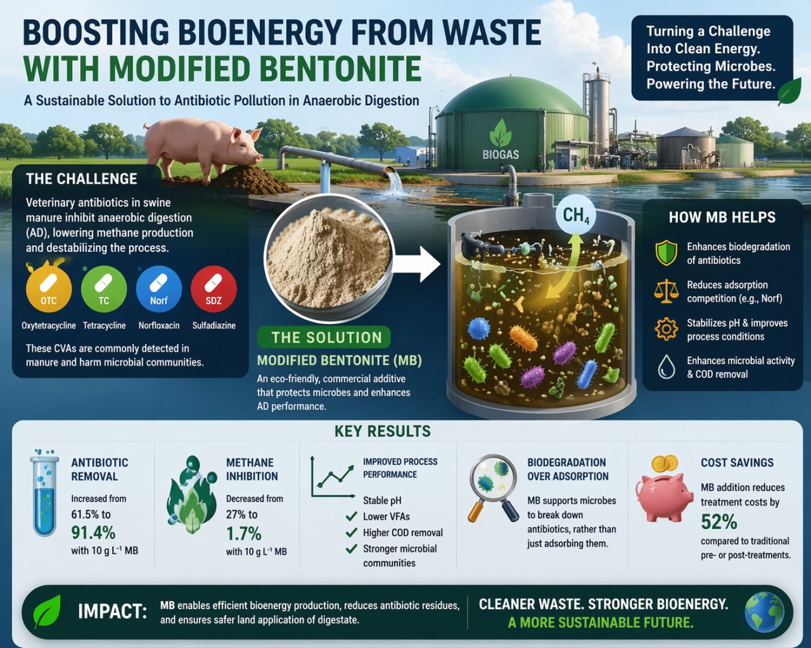
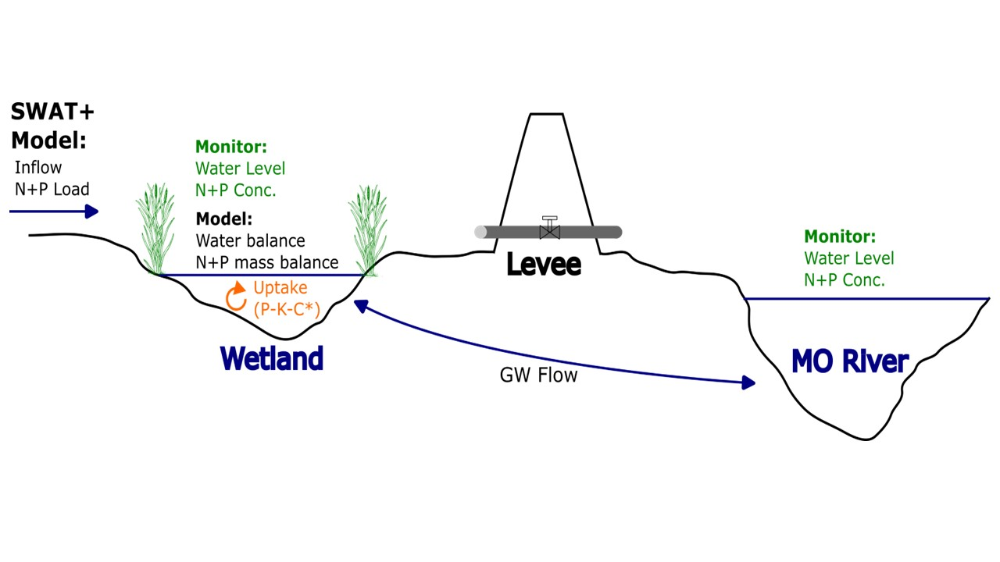
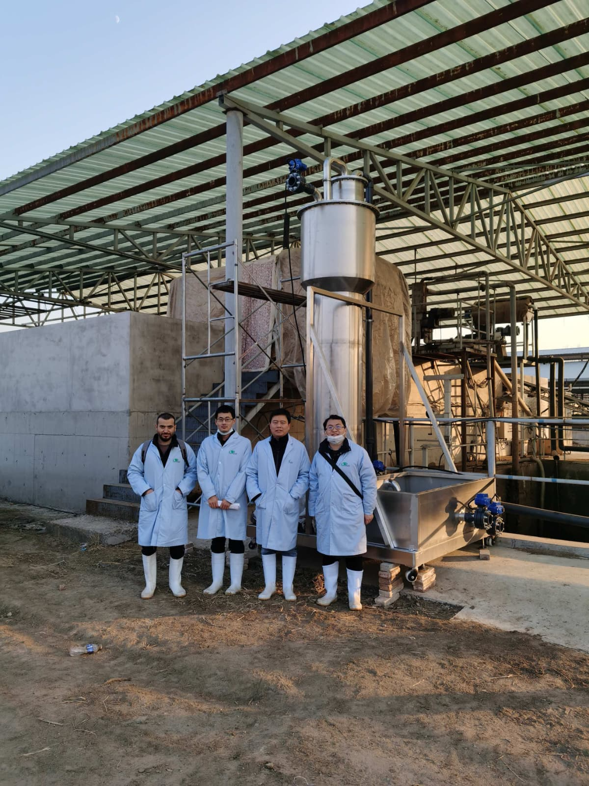

01
Water & wastewater treatment
Environmental process engineering, water quality, treatment performance, and sustainable treatment systems.
My research explores treatment processes and environmental systems that improve water quality, manage emerging contaminants, and recover value from waste streams.
Environmental process engineering, water quality, treatment performance, and sustainable treatment systems.

Fate, transport, and treatment of veterinary antibiotics, PFAS, microplastics, and antibiotic resistance genes.

Biological treatment, anaerobic digestion, biogas and biomass utilization, and contaminant behavior in treatment systems.

Constructed wetlands, floating treatment wetlands, and nature-based approaches for nutrient and pollutant removal.

Watershed and treatment-system modeling, spatial analysis, machine learning, and data-driven optimization.

Waste-to-resource strategies and sustainable approaches connecting water, energy, and materials.